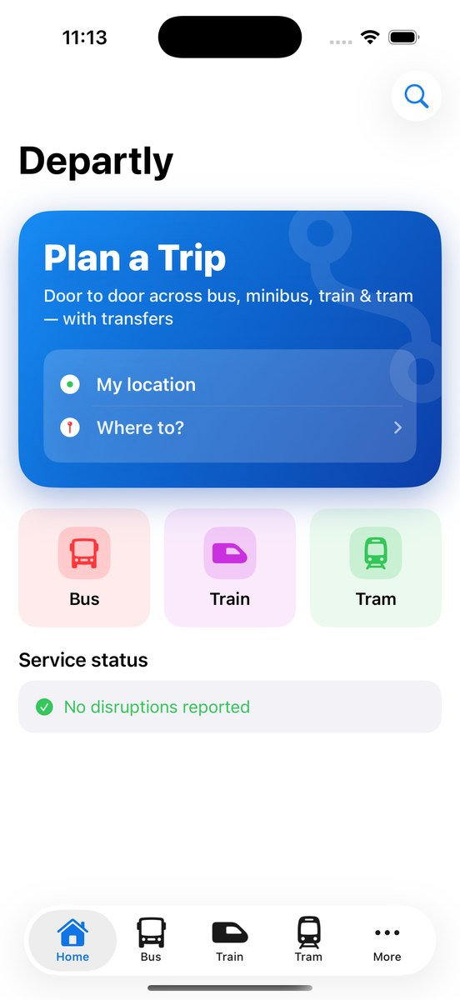
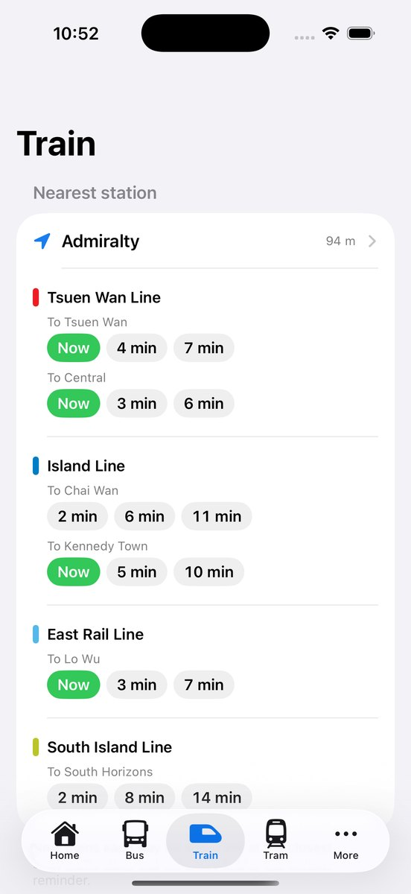
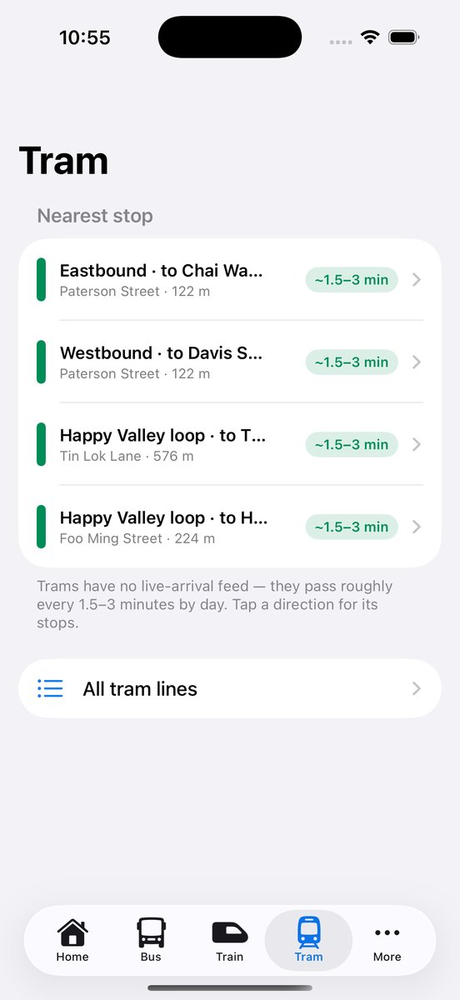

Everything that moves Hong Kong, Macau and Singapore, in one place
Plan a trip, door to door
Enter where you are and where you're going. Departly compares franchised buses, New Lantau Bus, green minibuses, heavy rail, Light Rail, trams and ferries — and in Singapore, MRT, LRT and public buses — then works out the transfers and the fare for you.
Live arrivals for every mode
Real-time arrivals for buses, minibuses, rail and Light Rail, refreshed automatically — and the next several departures at each stop, not just one.
Get off at the right stop
Set a get-off reminder and relax. Departly alerts you as you approach your stop — even with the screen locked, and even underground.
Fares up front
See the fare for every leg and the whole trip before you go — for Adult, Child, Elderly or Student, with official rail concessions. Singapore fares are estimated from the Public Transport Council's published distance bands.
Nearby, at a glance
Your nearest stops and stations with a live departure board, plus favourites for the routes you use most.
Singapore, end to end
Live LTA bus arrivals at every bus stop, the published MRT and LRT timetable, and a distance-band fare estimate for the whole journey.
Macau and the crossing
Plan inside Macau, and across the Hong Kong–Macau ferry and bridge-shuttle crossings. Macau planning needs Departly Pro or the one-off 7-day Macau Tourist Pass — everything else on this page is free.
Widgets & Apple Watch
Home- and Lock-Screen widgets, Live Activities, and an Apple Watch app keep your next departure one glance away.
Get-off reminder — how it works
Open a stop or station and tap Remind me to get off. Departly alerts you as you get close. For buses, allow location (“While Using” is enough; “Always” lets it fire even if the app was closed). For rail it's clock-based, so it works underground with no GPS. Notifications give the most reliable alert.
Departly Pro
Departly is free, with trip planning, live arrivals and the get-off reminder for everyone. Departly Pro removes ads and unlocks extras — either as a monthly or yearly auto-renewable subscription, or as Departly Pro Lifetime, a one-time purchase that never renews and never expires. Planning across Macau and the Hong Kong–Macau crossing needs Departly Pro or the one-off 7-day Macau Tourist Pass (a single 7-day purchase, not a subscription) — trip planning, live arrivals and the get-off reminder in Hong Kong and Singapore stay free. Subscriptions renew automatically unless cancelled at least 24 hours before the period ends — manage or cancel anytime in your account settings.
Questions
Why does an arrival show “no live time”?
That route has no live prediction right now — often the next bus hasn't left its terminus yet, or it's a peak-only/night route. Departly shows the scheduled frequency or first bus where available.
Are the times official?
Departly shows the estimates operators publish — as Hong Kong public sector information, and in Singapore via LTA DataMall. Singapore bus arrivals are live; Singapore train times are the published timetable, because LTA does not publish real-time train arrivals. Macau times come from the published timetable too. Times and fares are estimates and can change with traffic.
Is Departly affiliated with the transport operators?
No. Departly is an independent app and is not affiliated with, endorsed by, or operated by any transport operator, the Government of the HKSAR, the Macao SAR Government, or the Land Transport Authority of Singapore.
Contact
Questions, bugs or feedback: mwsupplylimited@gmail.com · Privacy Policy